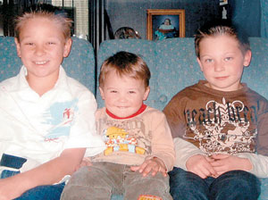

A few years ago I read a book by the iconic Australian author Helen Garner titled "House of Grief". It dealt with the trial and conviction of a man named Robert Farquharson for the murder of his three young sons Jai (age 11), Bailey (age 7) and Tyler (age 3) on Fathers' Day in 2005.
Robert Farquharson at the time of the first trial
House of Grief is an excellent read, as are most of Garner's books. She gave what I am sure (from other reading) was a full and and fair summary of the evidence. She ultimately became convinced of Farquharson's guilt, as did two successive juries. Farquharson's first trial for the murder of his sons began in the Supreme Court of Victoria, before Justice Philip Cummins, on 21 August 2007. A total of 49 witnesses appeared during the six week trial.

Jai, Tyler and Bailey FarquharsonFarquharson surrendered custody of the children to his wife Cindy about 12 months before. Although separated, he and his wife were quite cooperative with each other concerning the care of the children. Cindy had facilitated Farquharson's having the children on Fathers' Day 2005 even though it was not his normal custody weekend. They celebrated with an afternoon out in Geelong and an early dinner of KFC. Farquharson then began driving the kids back to their mother's house (where she was living with a new de facto after getting Farquharson to leave the family home a year previously. It was on that drive home that the fatal event occurred. The car left the road and crashed into a dam beside the Princes Highway just before Winchelsea in Victoria. The car filled with water and submerged. His three sons were unable to free themselves and drowned. Farquharson managed to escape and alerted another driver who took him to nearby Winchelsea.
Farquharson's principal line of defence was that he had suffered an attack of cough syncope, whereby a sudden loss of consciousness occurs after a violent cough or a series of coughs. He claimed that he suffered such a loss of consciousness and that this was why he lost control of the vehicle.
Prosecution witnesses cast severe doubt on Farquharson's cough syncope story, and clearly neither jury believed it, even though there was abundant and uncontradicted evidence that he DID have frequent coughing fits at that time and could lose his breath (although no-one had actually witnessed him losing consciousness).
After three days of deliberations, the jury found Farquharson guilty on 5 October 2007, and on 16 November 2007, was sentenced to three terms of life imprisonment without parole. He then announced an intention to appeal.
There were several grounds of appeal, probably the most important being the fact that a key witness key witness for the prosecution, Greg King, was facing potential criminal charges at the time of the original trial. King, who was a bus driver and good friend of Farquharson, had given evidence of a conversation he claimed to have had with Farquharson two months before the incident outside a fish and chip shop. He said his friend spoke of seeking revenge on his former wife and of wanting to "take away the things that mean the most to her" (meaning the three children). On 17 December 2009, Farquharson's conviction was unanimously overturned by the three Court of Appeal judges, and Farquharson was released on bail.
His retrial began on 4 May 2010 before Justice Lex Lasry QC. The jury retired to consider its verdict on 19 July after hearing 11 weeks of evidence and argument. On 22 July, the second jury again found Farquharson guilty of murder. On 15 October 2010, he was sentenced to life imprisonment with a 33-year minimum. The High Court denied his application for special leave to appeal in 2013. Farquharson is currently serving his term of imprisonment in Barwon Prison's protection unit.
Normally that would be the end of the matter. The principle of finality means that convicted felons cannot continue litigating whenever they dream up a new ground of appeal. However, in 2019 the Victorian Parliament enacted amendments to the Criminal Procedure Act 2009, namely section 326A, whereby a court may permit a person who has exhausted their right to appeal against conviction to "appeal to the Court of Appeal against the conviction if the Court of Appeal gives the person leave to appeal", but only in certain very restrictive circumstances.
The Victorian legislation closely followed a similar NSW law, which seems to have been enacted in light of the Kathleen Folbigg case (four cot deaths, with Folbigg - like Farquharson - serving a long prison sentence before being shown to be possibly/probably not guilty and released). The Lindy Chamberlain case is also often mentioned in this context.
The restrctive circumstances in the Victorian law are set out in section 326C. The obvious reason for those restrictions is to avoid the problem mentioned above (endless litigation). In summary, section 326C requires that any new evidence be "fresh and compelling" (both of which are defined), and:
(A) it is highly probative in the context of the issues in dispute at the trial of the offence; or
(B) it would have eliminated or substantially weakened the prosecution case if it had been presented at trial.
Evidence that would be admissible on a second or subsequent appeal is not precluded from being fresh or compelling only because it would not have been admissible in the earlier trial of the offence that resulted in the conviction.
It appears that Farquharson lodged such an appeal earlier this year. His case is summarised in this ABC article, which also contains a link to a very detailed 5 part podcast. In relatively short summary, it seems that the major planks of Farquharson's case are as follows
- The first major point relates to Farquharson's defence that he crashed due to a blackout caused by cough syncope. As mentioned above, at neither trial was there a witness who had actually seen Farquharson lose consciousness. While in prison, however, he was witnessed losing consciousness during a (seeming) attack of cough syncope. Perhaps that might be argued to meet the test of "fresh and compelling", although whether it could meet the conditions set out at (A) and (B) of section 326C is another question. Moreover, it is conceivable that Farquharson faked his unconsciousness with a view to underpinning an appeal. However, that possibility could not be meaningfully examined by the Court of Appeal in the current proceedings, because evidence is not generally called in an appeal, and without it the Court could not assess his veracity.
- The second major point being relied on by Farquharson in his new appeal relates to a witness name Dawn Waite. Waite gave evidence along these lines at Farquharson's second trial (see this article in The Age newspaper):
- Waite came forward to police to report that she had seen a light coloured Holden Commodore driving erratically and slowly a few kilometres before the dam where the children drowned. At the trial, Waite gave evidence that, on her way back from a shopping trip to Melbourne with her 16-year-old daughter and her friend, she had seen a man through the car’s rear window and then through the side window as she overtook. She described a clean-shaven Caucasian man in his 30s, looking well and not coughing – she could tell because his face was not red. ...He was looking out to the right of the car, and a number of children were squashed in the back seat, she told the court.
- The prosecution invited the jury to believe that Waite had identified Farquharson as he was looking for the exit from the road to the dam as part of his plot to murder his three children. She then said that, after passing the car, she had seen it in her rear vision mirror veering off the road to the right as it came down the overpass, presumably on its way into the water. She says that at the time she thought the man and his boys might have been heading off the road looking for foxes.
Waite told the Age journalists researching for their podcast of her recollections of the night. She said she had been at the noodle shop in Colac – about 30 minutes further down the road from the dam – about the time Farquharson entered the dam. ...
“I ordered the fried noodles number 23. And the kids had a vegetarian noodle box.”
Waite said she remembered the time they ordered because she had “kept the receipt for years”. The time on the receipt was 7.15pm, she said.
However, Farquharson and his boys did not reach the dam until about 7.15pm – a 30-minute drive from where Waite said she was.
There was no contest at the trial about the time of Farquharson’s trip because a cash register docket from Kmart in the Geelong suburb of Belmont proved he bought a cricket ball and a video for his boys at 6.37pm.
From there he travelled the 15 minutes to his sister’s house and stayed there a few minutes – evidence at his trial suggested it was about 10 minutes – chatting with his brother-in-law.
Then he got back in the car and drove the approximately 10 minutes to the dam about 15 kilometres away. The evidence, confirmed by police, is that he could not have been at the dam any earlier than 7pm, and more likely 7.15pm.
- The third major point being relied on by Farquharson is research showing just how quickly cars sink, especially in reasonably deep water. The water in the dam where the Farquharson children died is more than 7 metres deep. The research took place long after the Farquharson trials, and indeed some of it was triggered by the Age/60 Minutes investiagtions leading to the five part podcast areeady mentioned. 60 Minutes Australia, in an episode hosted by Nick McKenzie, spoke to numerous experts, most prominently Anna-Maria Arabia, chief executive of the Australian Academy of Science, while questioning much of the evidence presented by the prosecution.
- The 60 Minutes piece was prompted by a joint investigation done by The Age and the Sydney Morning Herald, whose five part podcast, Trial By Water, also questions whether or not Farquharson was unfairly convicted.
All three of these points concern evidence not available at either of Farquharson's trials, as the above discussion explains. Does all of it meet the requirements of section 326C? They are certainly "fresh", in that none of this evidence was adduced at the trial of the offence. But does it meet the second requirement for freshness (i.e. that it could not, even with the exercise of reasonable diligence, have been adduced at the trial)? The first point certainly meets that test. There was no witness who had seen Farquharson lose consciousness, and the defence could not "magic" such a witness into existence. The second point is a bit trickier. Certainly Dawn Waite did not give evidence about her purchase of noodles in Colac. Presumably she wasn't asked by the Prosecution. Could the defence team be expected (or be able) to ask such questions and conduct the sort of investigation undertaken by The Age/60 Minutes team? Waite was certainly an important witness, but there were 49 witnesses in total and quite a few of them were just as important to the case as Waite. It is extremely unlikely that legal aid would have funded Farquharson's defence team to employ private investigators to look in depth into the stories of every important witness. Thus, on balance I think we can say that the defence could not "with the exercise of reasonable diligence" have adduced Waite's evidence at either trial. Similarly with point three. It is extremely unlikely that legal aid would have funded the defence to undertake research about how quickly cars sink in water. Thus the "reasonable diligence" test is also met. However, evidence must not only be "fresh" but also "compelling". It is compelling if both "reliable" and "substantial". All three major points are certainly substantial, in that they formed significant planks of the prosecution case. But I have my doubts about whether the evidence about Farquharson's loss of consciousness can be called reliable. As I commented earlier, Farquharson could have faked falling unconscious. Despite all the above, I think there is a reasonable chance that Farquharson's appeal will succeed, and that he will end up facing a third murder trial. However, succeeding on this appeal certainly doesn't mean he will be acquitted next time. There was a lot of other evidence that has not been impugned, some of it important. Indeed, the points I have considered are only three of the seven key issues said to underpin Farquharsons' convictions. I'm not going to canvass them here, because this article has already gone on for more than long enough.